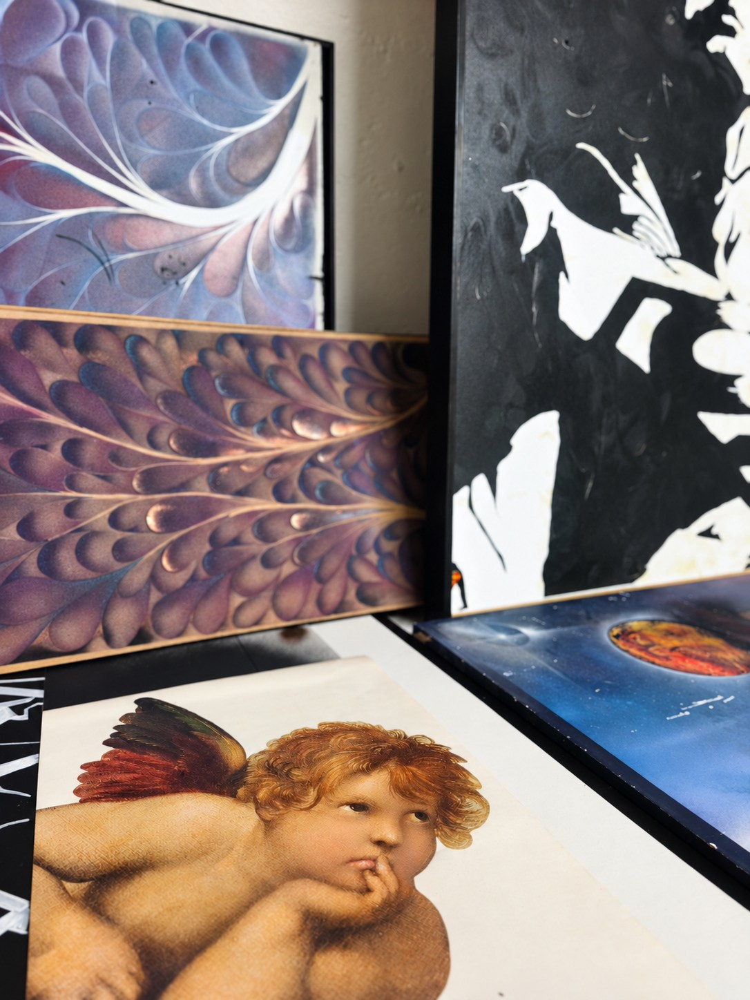
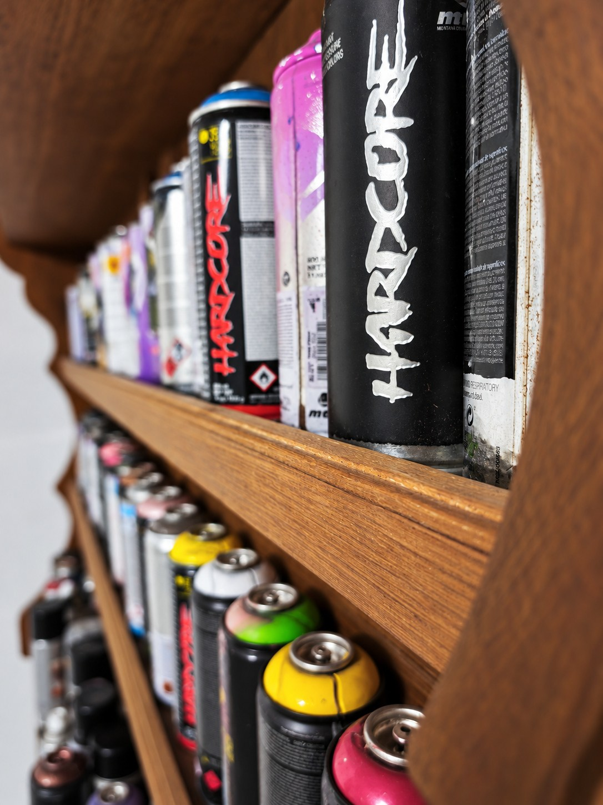

FRAGMENTS D’UN ENVIRONNEMENT CRÉATIF
Atelier
& Univers.
Entre les œuvres, la matière attend.
Montrer un peu.
Suggérer davantage.
Des regards sur le lieu de création.
LA DÉMARCHE ARTISTIQUE
De la matière
à l’expression.
Le papier, la lumière et le mouvement accompagnent une recherche où chacun garde sa liberté de regard.
Découvrir ma démarche